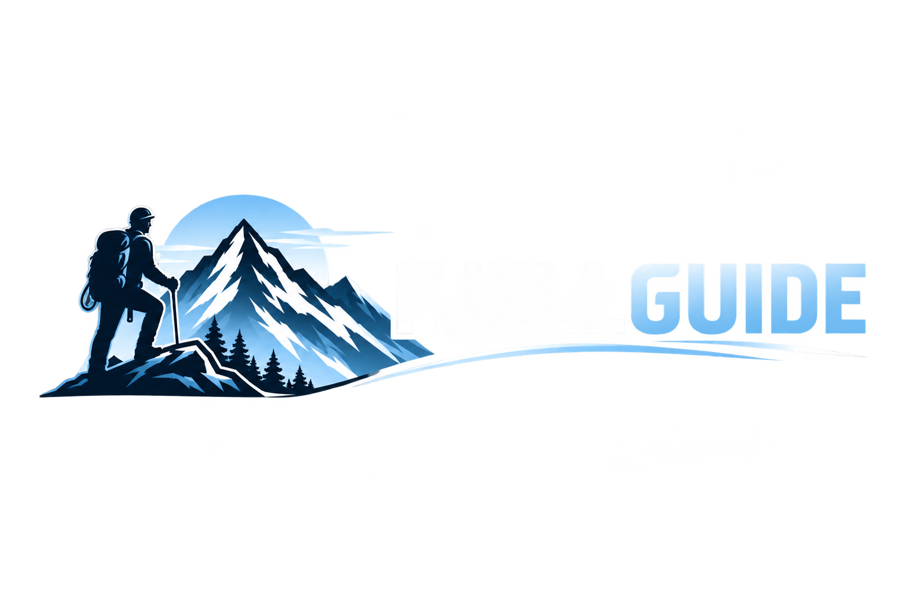
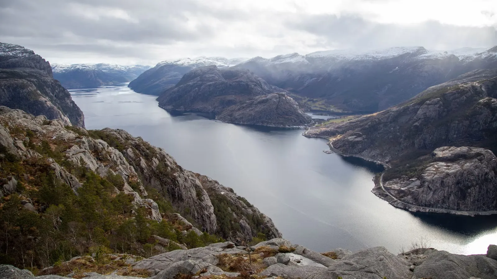

Besseggen
JotunheimenNorges mest kjente fjelltur. Smal rygg mellom Gjende og Bessvatnet — turkis mot mørkeblå. Krever god kondisjon og stødig hode for høyder.


Norges mest kjente fjelltur. Smal rygg mellom Gjende og Bessvatnet — turkis mot mørkeblå. Krever god kondisjon og stødig hode for høyder.
Norges mest kjente fjelltur. Smal rygg mellom Gjende og Bessvatnet — turkis mot mørkeblå. Krever god kondisjon og stødig hode for høyder.
Norges mest kjente fjelltur. Smal rygg mellom Gjende og Bessvatnet — turkis mot mørkeblå. Krever god kondisjon og stødig hode for høyder.
Norges mest kjente fjelltur. Smal rygg mellom Gjende og Bessvatnet — turkis mot mørkeblå. Krever god kondisjon og stødig hode for høyder.
Finn turer som passer for alle nivåer, fra enkle dagsturer til krevende flerdagsturer.
Har du spørsmål eller ønsker å dele dine erfaringer? Kontakt oss gjerne!